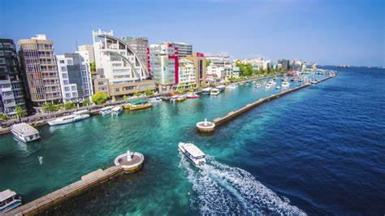
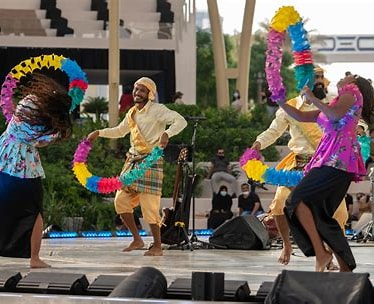
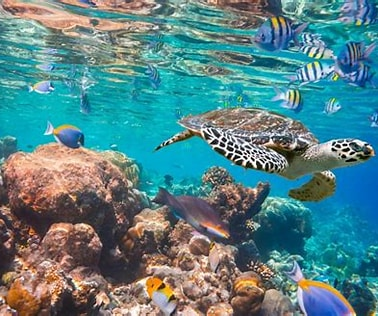
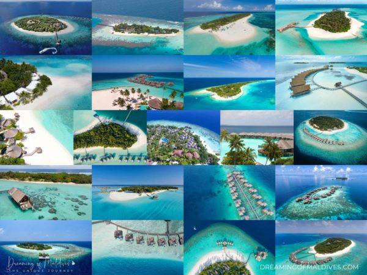

Why Male`?
The Heartbeat of the Maldives
Have you ever wanted to explore a city that combines the best of both worlds. If so, then you should definitely consider visiting Male` City in the Maldives! This city is such a great destination and has a lot to offer to travelers. The stunning natural beauty of an island paradise, and the vibrant energy of a bustling urban center.
The capital and largest city is Malé, with a population of 133,412 people. Male is one of the busiest tourist destinations in the Maldives, with many hotels and resorts located on its island. The Maldives is a tropical nation, with warm weather all year round. The best time to visit is between December and April, when the weather is dry and sunny. May to November is the wet season, with heavy rains and strong winds.
Male`City Life
Traveler's Common Interests

Cultural Experiences in Male`
The capital city is home to a unique blend of cultures, with influences from India, Sri Lanka, Africa, and the Middle East.
Food
Male’s culture is most evident in its food. You’ll find a variety of curries and other dishes that reflect the city’s diverse influences.
Shopping
The city’s many markets offer everything from local handicrafts to designer clothing. bargaining is expected, so don’t be afraid to haggle for a good price.

Natural Beauty & Wildlife
There's more to Male City than just its bustling businesses and government offices. Its a place where you can find natural beauty and wildlife.
Fish Market
Male Fish Market is not only a great place to buy fresh seafood, but it's also a great place to see some of the amazing marine life.
Snorkling
The Maldives are home to some of the best coral reefs in the world, so you're sure to see some amazing underwater creatures on your trip.

Beaches and relaxation
If you're looking to relax on a secluded sands or enjoy some snorkeling and diving in the country, Male's beaches have something for everyone.
Soneva Fushi Resort
This resort offers its guests a truly unique experience, with private villas nestled amongst the lush vegetation and white sand beaches.
Hulhumale Beach
Enjoy clear water and beautiful coral reefs or restaurants and cafes dotted along the beach, while soaking up the stunning views.